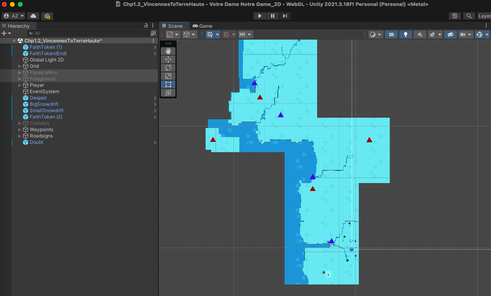

Votre Dame, Notre Game
Father Sorin's Adventures
The University of Notre Dame has an amazing founding story. Father Sorin and six brothers of the Congregation of the Holy Cross traversed miles of treacherous snowy Indiana landscape in the bleakest mid-winter. This 2D pixel-art game reconstructs that history and invites you into their weary shoes, fighting off snowbanks, despair, and doubt.
The story starts in Vincennes, Indiana where Sorin and the brothers were first stationed. Restored buildings like the Basilica of St. Francis Xavier, Elihu Stout's print shop, and the Red House give us a sense of what that community looked like.
Keeping the history accurate is part of the fun, but so too is imagining how Fr. Sorin and his brothers communicated – Sorin was known as much for his blunt pragmatism as for his lyric letter-writing. You can find out more thanks to the archival work of Notre Dame students
One of my favorite design decisions for this game has been to turn the elements into the enemies: Fr. Sorin has to dodge snowbanks and avoid psychological enemies that not only follow him around but also anticipate his moves. Despair (a color-inverted flame, the inverse of that Pentecostal tongue of fire) pursues him at every turn and risks clouding out Sorin's field of view, while Doubt (a spinning wheel) will pop up out of nowhere and scramble Fr. Sorin's sense of direction.
Recreating the journey from Vincennes to South Bend has required some assiduous mapping. A few years ago, the Notre Dame community commemorated this long journey by walking the whole trail. In the game, those miles will hopefully go by a bit faster but you'll learn all about the people and the places.
